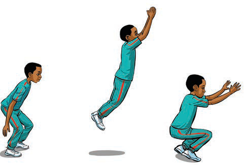

Kielelezo namba 7: Kufanya zoezi la kuruka kwa miguu miwili
Kazi ya kufanya namba 7
(a) Fanya zoezi la kuruka kwa miguu miwili ukiwa peke yako.
(b) Katika makundi, fanya zoezi la kuruka kwa miguu miwili.
(d) Kuruka kamba
Hili ni zoezi linalosaidia kuimarisha kasi ya miguu na kuongeza stamina. Zoezi hili linaweza kufanyika kwa kuruka kamba kwa mguu mmoja au miguu yote miwili.
Namna ya kufanya zoezi la kuruka kamba:
(i) Shika mwisho wa kamba kwa mikono;
(ii) Izungushe kamba ikupite chini ya nyayo na juu ya kichwa ukiwa unaruka;
(iii) Endelea kuruka kwa kasi kwa sekunde 60, kisha pumzika kwa sekunde 30; na
(iv) Rudia mara 3 hadi 5 kwa kufuata hatua ya kwanza, ya pili na ya tatu zilizoainishwa kama zinavyoonekana katika Kielelezo namba 8.